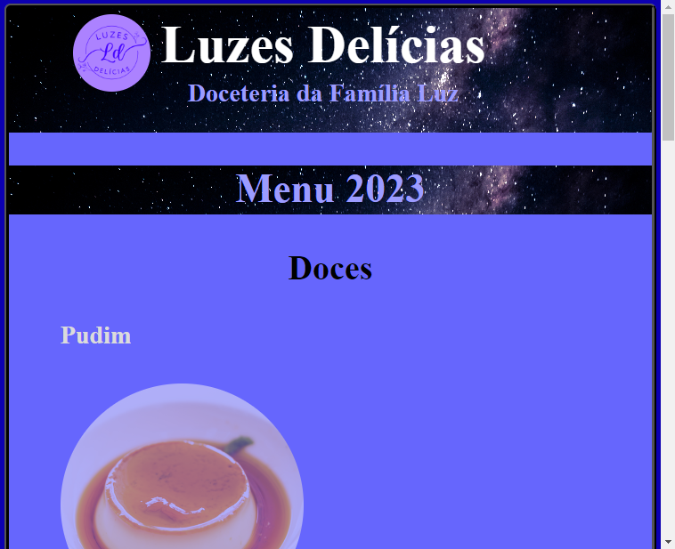

Tamires da Luz Batista
Projetos
Curr√≠culo üìë
Primeiro currículo em HTML, desenvolvido como meio de avaliação de aprendizado do programa ElasNaTech e aprimorado ao longo do curso
Cardápio üç∞
Cardápio fictício criado como primeira iniciativa de desenvolvimento de site, utilizando HTML e CSS para avaliação de aprendizado do programa ElasNaTech e aprimorado ao longo do curso
